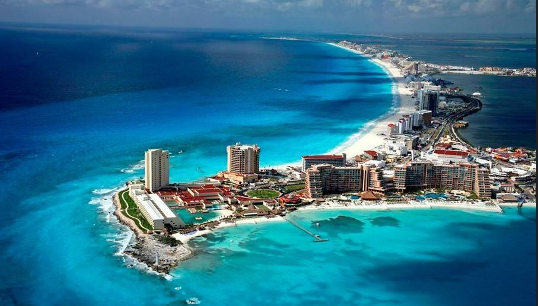
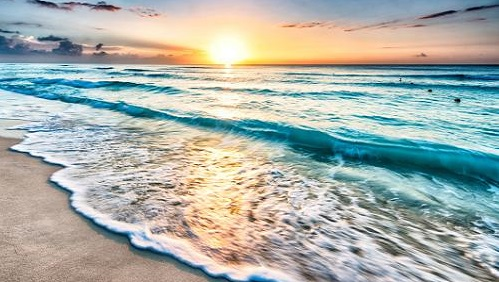
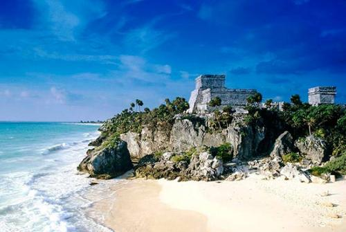
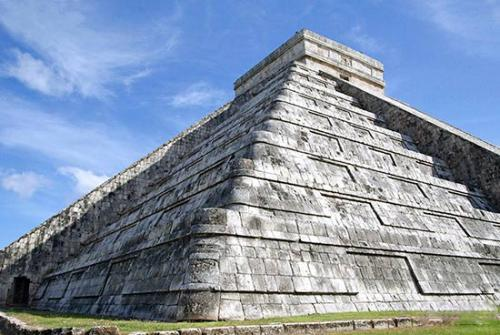
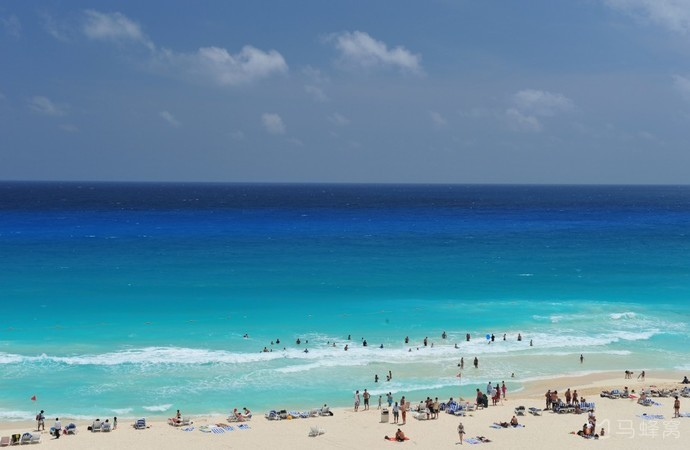
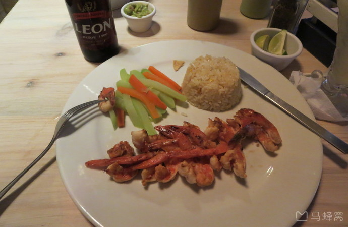
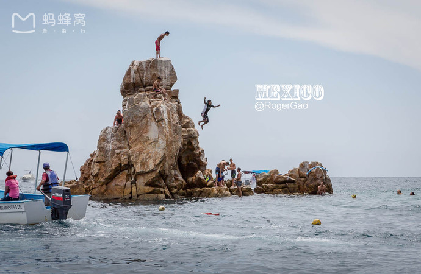
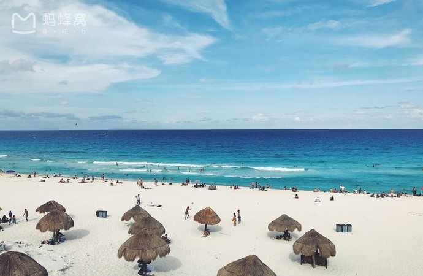

morly旅游网
坎昆（Cancun）是墨西哥著名国际旅游城市，位于加勒比海北部，墨西哥尤卡坦半岛东北端，过去它只是加勒比海中靠近大陆的一座长21公里、宽仅400米的狭长小岛。整个岛呈蛇形，西北端和西南端有大桥与尤卡坦半岛相连。隔尤卡坦海峡与古巴岛遥遥相对。该城市三面环海，风光旖旎。坎昆是世界公认的十大海滩之一，在洁白的海岸上享受加勒比的阳光是人们休闲假期的最高境界。
在玛雅语中，坎昆意为“挂在彩虹一端的瓦罐”，被认为是欢乐和幸福的象征。这里的海面平静清澈，因其深浅、海底生物情况和阳光照射等原因，呈现出白色、天蓝、深蓝、黑色等多种颜色。还可以游览拉里维拉玛雅，去发现卡尔门海滩、斯卡雷特和西尔哈以及面对大海、唯一有围墙的玛雅文化城市和引人入胜的考古区图伦。在尤卡坦半岛东北部的奇琴－伊察，还有闻名世界的卡斯蒂略金字塔，卡斯蒂略在玛雅语中意为“带羽毛的蛇神”，被当地人认为是风调雨顺的象征。此外，在距坎昆130公里处还有图伦遗址，据说，这是迄今墨西哥保存最好的一座玛雅和托尔特克人的古城。
坎昆一向是北美人度假的不二之选，尤其是在三月中旬美国各大高校春假之际，学生们倾巢而出，奔向坎昆（也有一部分奔向迈阿密，参加著名的ultra电音节）。
 坎昆对于国内的朋友来说并不是一个非去不可的地方，因为国内尚未有直飞去坎昆的航班。不过如果你有去美国的旅行计划，可把坎昆规划进你的计划里。拥有美国签证去坎昆可免签。
需要注意的是，一些餐馆喜欢在蘸玉米薯片的酱料里放入香菜。在坎昆，喜欢吃海鲜的朋友一定可以大快朵颐了。坎昆的海鲜非常新鲜，价格也不贵。生蚝一定要尝试，又大又新鲜，蟹腿肉比成人的大拇指还粗，我一个不喜欢吃海鲜的人都觉得这里的海鲜好吃。当然，坎昆作为旅游城市，物价比墨西哥其他城市高出一些，但是也就是美国小城市水平，可以接受。
游玩推荐
1、第一天可以选择在酒店的沙滩度过。很多酒店的沙滩都有bar，可以点一杯鸡尾酒。推荐Mai Tai，是加勒比海特有的鸡尾酒。
2、玛雅之旅：去距离坎昆一百三十公里的图伦遗址，参观这个迄今保存最完整的玛雅遗址。其实这个景点没啥意思，去了就是拍拍照，并且天气非常热，还经常刮风，刮得风夹杂着灰尘和沙子，吹到脸上，脸灰蒙蒙的。但是还是建议大家去一下，毕竟是世界八大奇迹之一。可以提前在当地旅行社报团，许多酒店附近都有当地旅行社设的点。记得一定要砍价。50刀左右较为合理。
3、摩托艇、快艇：也是在旅行社报团，旅行社有各种项目的传单。时长两小时，价格50刀左右。
 4、水上乐园：坎昆有好几个水上乐园。如果喜欢水上项目且资金充足的话，几个都可以去。我们因为时间来不及，去了xel-ha。也是跟旅行社报了名，价格在100刀左右，原价可能140刀左右。这个水上乐园相对不那么刺激且是all inclusive，园内有至少三个自助餐厅，饿了就进去吃，很值得。
需要自带泳衣，建议穿可以下水的专用鞋。这个游乐园大部分活动都在水里。先步行到水域的尽头，然后在尽头坐充气船，一路向前。水域两边不时有口岸，一般口岸附近就有项目可以玩。需要注意的是，水里不允许穿鞋，但是有时会上岸走路，如果赤脚走的话，走太久，脚会非常痛，别问我怎么知道的，所以一双可以下水穿得鞋是多么重要，这种鞋可以在乐园门口的商店买，价格不高。大家也不需要担心随身行李的问题，因为行李可以寄存，工作人员会把你的行李装进袋子里，然后上锁，给你一把钥匙，保管好钥匙就行。
 这些游玩项目最好找当地旅行社，一是可以拿到较为优惠的价格，二是可以乘坐旅行社的大巴。在填写资料的时候，填上你所居住酒店的名字，大巴会接送。
5.这次可惜的是没有去坎昆著名的club coco bongo，喜欢喝酒、热闹、蹦迪的同学一定不要错过。墨西哥的特色酒，龙舌兰，一定得来几口。
 内容整理至网络，如有侵权，请联系我们！1255394075@qq.com